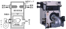

2024年
問題123 給湯設備に関する次の記述のうち，最も不適当なものはどれか．
（1）真空式温水発生機は，缶体内を大気圧より低く保持しながら水を沸騰させる．
（2）耐熱性硬質ポリ塩化ビニルライニング鋼管には，管端防食継手を使用する．
（3）ヒートポンプは，排熱を利用した給湯熱源機器としても使用される．
（4）給湯を停止できない施設では，貯湯槽の台数分割が必要になる．
（5）熱交換器を用いて排水から熱回収する場合は，熱効率を上げるために直接熱交換を行う．
2024年
問題123 正解（5） 頻出度AAA
効率は少し落ちるが汚染防止のために2次熱交換器を設けて間接熱交換とする（2024-123-1図参照）．
2024-123-1図 間接熱交換による廃熱回収の方法

出典（図）公益社団法人 日本建築衛生管理教育センター
「新建築物の環境衛生管理」（平成31年3月31日 第1版第1刷）中419 図6-4-1(6)
-(1) 真空式温水発生機（2024-123-2図）は減圧蒸気室で蒸気の潜熱を熱交換に利用している．
2024-123-2図 真空式温水発生機

出典（写真） 株式会社前田鉄工所（MAEDA IRONWORKS CO.,LTD.）
https://www.maedatekkou.co.jp/product/rkvmfv